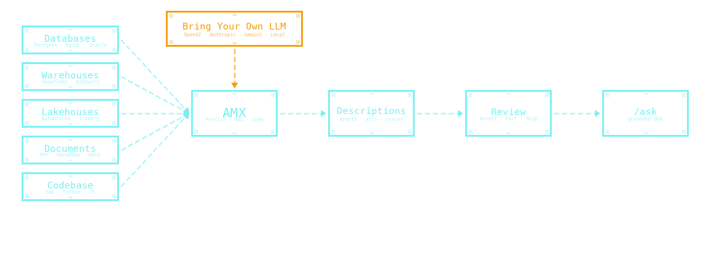
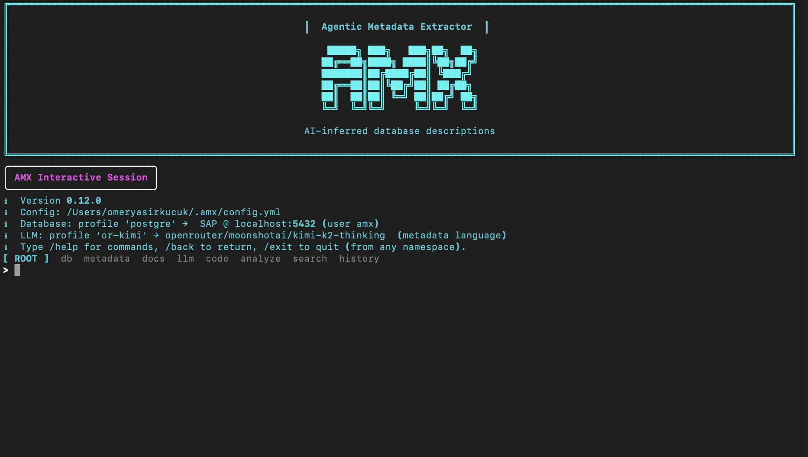

AMX — Agentic Metadata Extractor¶
AMX (Agentic Metadata Extractor) provides AI-powered guidance and reference for data analysts, data engineers, and data catalog owners working with undocumented database schemas.
AMX walks your database, reads your documentation and codebase, then drafts a complete description for every table and column, with confidence scores and a human review before anything lands in the live database.
The pain. Most AI metadata tools work column-by-column, schema-only — you approve generic suggestions one at a time, with no project context. Combining database + documentation + codebase evidence with a structured human review is rare; doing all four with native COMMENT ON write-back is rarer still.
AMX's angle. Database + documentation + codebase + human review, run together. Drafts in batches with confidence scores, written back as the SQL your warehouse already speaks. Whole-warehouse first-pass in minutes, not weeks.
Then /ask it. Open a session and chat with the catalog you just built: "what joins to customer?", "any columns missing descriptions?", "what does x_legacy_status mean?", "which tables haven't been touched in 90 days?". Plain English in, grounded answers out — every response cites the exact catalog rows the LLM read, so you never get a fabricated column name back.
Self-hosted by design · free and open source. AMX runs entirely in your environment. No SaaS account, no data leaves your network, bring-your-own-LLM — including local models (Ollama, vLLM, LM Studio). The compliance question collapses to "nothing leaves your perimeter": schema names, sample values, generated descriptions, the audit trail — all stay where you started. No vendor lock-in, no telemetry callbacks, no "trust us" footnote. Released under the Apache License 2.0 — free for any use, including commercial.

Tip
AMX supports 10 database backends and 7 LLM providers. The fastest way to evaluate
is pip install amx-cli, then run amx and walk through the /setup
wizard. Five minutes from install to your first reviewed description.
Try AMX¶
-
Install from PyPI with the database backends you need. Optional extras keep the default install lean.
-
Install, configure, run agents, review, apply. The full happy path in one short walkthrough.
-
Narrated end-to-end session against a sample SAP schema. Useful before running against production data.
-
/doctorchecks install, config, and connectivity from any shell — even when AMX itself can't start.
Explore AMX¶
-
The CLI shell, multi-agent orchestrator, search agent, and storage layer.
-
What the Profile, RAG, and Code agents read and how the orchestrator merges them.
-
The backend-neutral entity model that lets ten databases share a single workflow.
-
The review wizard, bulk-accept, write-back, and the full audit trail.
CLI reference¶
-
Every namespace and command, grouped by purpose.
-
Run agents, review suggestions, write back to the database.
-
Conversational metadata Q&A with grounded retrieval and live verification.
-
Run history, comparison across runs, re-evaluation.
-
Install / config / connectivity diagnostics.
-
--db-profile,--llm-profile,--apply,--csv, and the rest.
Backends¶
-
Capability matrix and per-backend deep dives.
-
Reference adapter. Standard
COMMENT ON …write-back. -
Account, warehouse, role; profiling-mode tuning per workload.
-
Unity Catalog SQL warehouse, with TLS recovery for corporate networks.
-
Project + dataset, byte-scan controls for large tables.
-
MySQL · Oracle · SQL Server · Redshift · ClickHouse · DuckDB
Six additional backends with first-class object-type listings.
Operate AMX¶
-
~/.amx/config.ymlschema, env vars, TLS and proxies, profiling modes. -
Setup notes for each supported provider, including Batch mode.
-
Codebase scans, document RAG, and the search catalog.
-
Shared history store, team setup, safety guards.
-
FAQ, common errors, and diagnostic recipes.
-
Stable
amx.coresurface for headless use from scripts and notebooks.
Evaluation¶
-
AMX vs Snowflake Cortex, Databricks AI Comments, BigQuery Gemini, Atlan, Collibra, DataHub, OpenMetadata — dimension by dimension, fairly.
-
The state of the field, AMX's confidence-band scoring, and the public Databricks-style protocol AMX is preparing.
Project¶
-
Release notes for every published version.
-
Development setup, branching, commit format, release process. Co-maintainers welcome.
-
Maintained by Omer Yasir Kucuk · contributors and sponsors welcome via GitHub.
-
How to report vulnerabilities. Supported versions and scope.
-
Source code, issue tracker, releases.